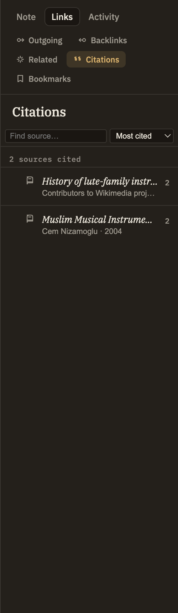

Docs/Right sidebar/Citations
Citations
The Citations panel is a bibliography for the note you're reading. It gathers every source the note cites or quotes into one tidy list, so you can see what you drew on and jump straight back to the original — no hand-kept reference list required.
What it shows
As you cite and quote sources in your writing, the panel collects them here. Each source appears once, even if you referenced it several times, and the list stays in step with what you type. Cite a source with a cite link and quote it with a quote link, and both show up on the same row.
Source row
Shows the source's title and its author and year, when known. A small chip on the right tells you how many times you cited it and how many times you quoted it.
Click a source
Opens that source so you can read it in full.
Expand a source
Any source you've quoted can be opened up to list each passage you pulled in, with a preview of the quoted words and a page number or location when there is one.
Click an excerpt
Jumps straight to that passage inside the source — handy for landing back on the exact spot in a long document you quoted from.
Search and sort
Search by title, author, or a phrase you remember quoting to find a source fast. Sort by most cited or alphabetically by title.
